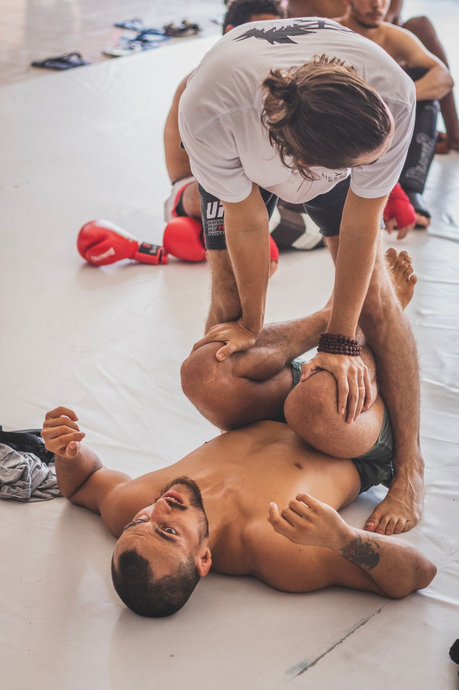
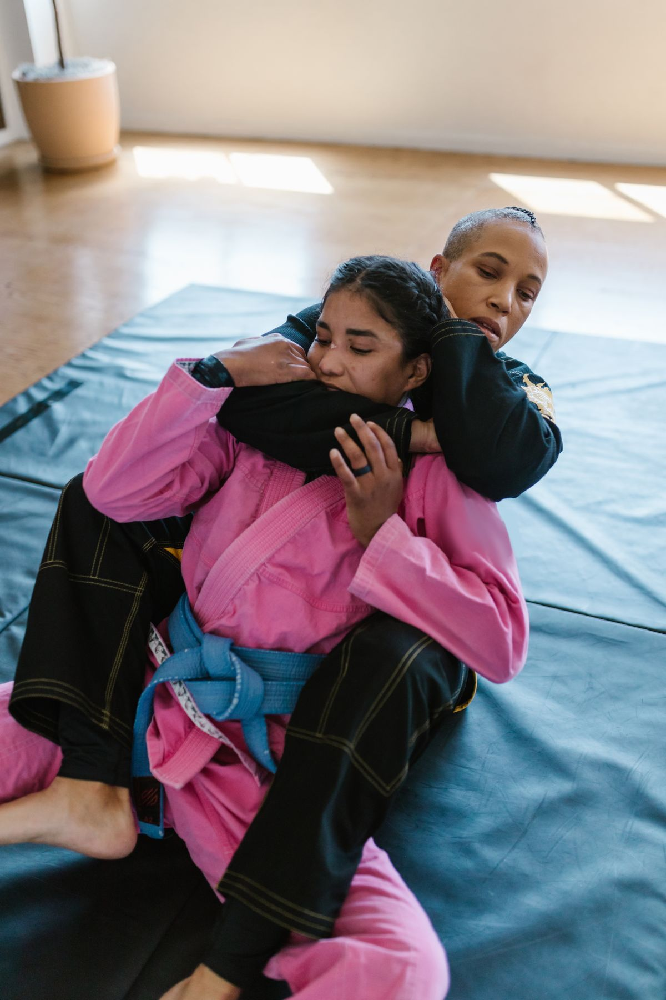
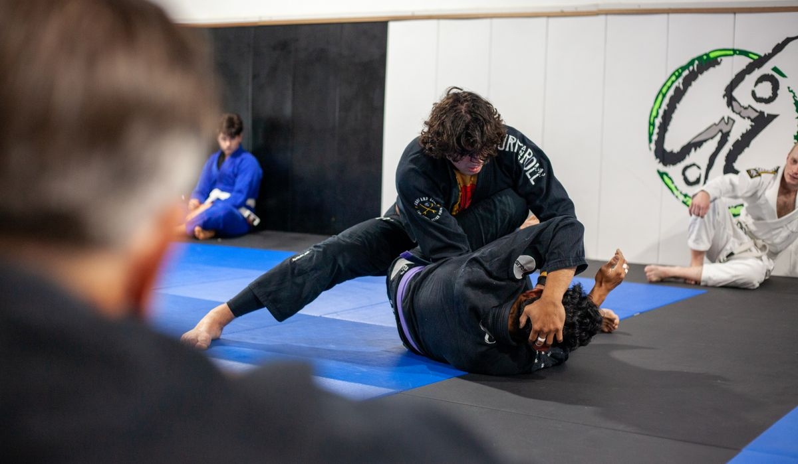

Adult Gi classes
Adult Gi classes on Monday, Tuesday, and Thursday from 6:15 to 7:30 PM.
Rabbit Hole Jiu Jitsu
Topeka, Kansas
Rabbit Hole Jiu Jitsu teaches Brazilian Jiu-Jitsu in Topeka, Kansas. The school runs adult Gi and No-Gi classes, kids Gi classes, and a Sunday open mat, for all skill levels. The school's tagline is Putting the fun back in Jiu Jitsu.
Adult Gi classes on Monday, Tuesday, and Thursday from 6:15 to 7:30 PM.
Adult No-Gi classes on Wednesday from 6:15 to 7:30 PM.
Kids Gi classes on Tuesday and Thursday from 5:00 to 6:00 PM.
Open mat on Sunday from 10:00 to 11:30 AM.
Classes are open to all skill levels.



All photos on this page are stock photos, not photos of this business.